CODING AGENTS AS PIXEL WORLD MODELS
traex/GPT-6.1-Sol · common50_0013
点击播放 · 原生 RGB 像素
逐轮保存的候选
回放视频、检查图与代码变化。
每份候选均可单独播放。实际图片检查记录在下方工具轨迹中。
候选 01播放与检查图
点击播放 · 原生 RGB 像素
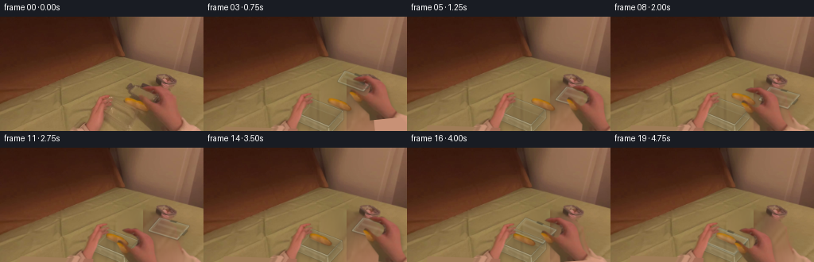
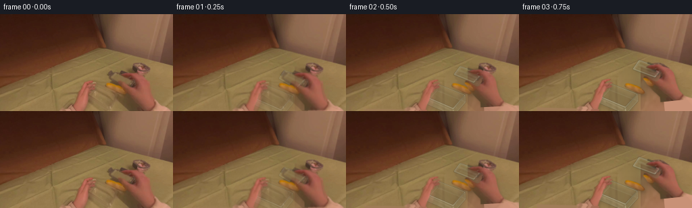
展开代码变化
--- 上一保存版本
+++ 本次保存版本
@@ -0,0 +1,217 @@
+from pathlib import Path
+import numpy as np
+from PIL import Image, ImageDraw, ImageFilter
+import cv2
+from scipy.ndimage import gaussian_filter
+import artifact_io
+
+ROOT = Path(__file__).resolve().parent
+W,H=256,144
+S=4
+src=np.array(Image.open(ROOT/'first_frame.png').convert('RGB'))
+hi=cv2.resize(src,(W*S,H*S),interpolation=cv2.INTER_CUBIC)
+
+def poly_mask(points,blur=.3):
+ im=Image.new('L',(W*S,H*S))
+ ImageDraw.Draw(im).polygon([(int(x*S),int(y*S)) for x,y in points],fill=255)
+ if blur: im=im.filter(ImageFilter.GaussianBlur(blur*S))
+ return np.asarray(im).astype(np.float32)/255
+
+LP=[(86,145),(96,138),(105,133),(108,132),(111,125),(114,116),(119,107),(123,102),(126,100),(132,99),(136,98.5),(138,99.1),(138,100.5),(133,102.2),(130,104.8),(130,106.7),(136,103.2),(138,102.6),(140.2,103.3),(140.4,104.8),(137,107.3),(133,109.4),(136.5,107.5),(139.7,108),(140.7,109.2),(138.7,111),(134,113.3),(131.5,113.8),(132.5,115),(130,117.8),(127.9,119),(125.4,129),(121.6,137.7),(119.8,144)]
+RP=[(194,145),(194,136),(186,127),(181,121),(178,117),(175,111),(172.4,106.8),(174.2,103),(176.4,102.9),(180.2,105.4),(185.3,110),(190.2,112.9),(193.8,112.2),(198,106.2),(198.7,101),(196.1,98),(192.2,95.7),(188.2,94.4),(183,93.2),(179.6,91.8),(177.8,90.4),(180.9,88.6),(185.8,87.4),(189.8,88),(194.1,86.8),(197.2,87.6),(200.6,90),(204.8,92.1),(209.8,94.3),(214,97.4),(217.5,102.4),(219.2,109),(220.1,117.9),(223.1,128.8),(227.4,135),(229.8,138),(238,142),(250,146)]
+BP=[(156.3,105),(157.8,102.8),(161.5,102.5),(165.7,103.6),(171.5,105),(178.3,108.2),(182.7,111.8),(185.9,115.1),(186.1,117),(183.9,118.8),(181,119.1),(176.8,117.9),(168.7,114),(160.4,110.6),(157.1,108.6)]
+lmask=poly_mask(LP,.45);rmask=poly_mask(RP,.45);bmask=poly_mask(BP,.35)
+
+# The stationary table is recovered only from colors and fabric texture in the photograph.
+remove=np.maximum.reduce([lmask,rmask,bmask,poly_mask([(128,101),(146,103),(159,83),(181,82),(201,98),(202,123),(205,144),(121,144),(117,122)],1)])
+remove=cv2.resize(remove,(W,H),interpolation=cv2.INTER_AREA)
+mask=np.uint8(remove>.08)*255
+mask=cv2.dilate(mask,np.ones((5,5),np.uint8))
+bg0=cv2.inpaint(src,mask,8,cv2.INPAINT_TELEA).astype(float)
+yy,xx=np.mgrid[:H,:W]
+# Reuse neighboring cloth at matching brightness, blending into the original untouched pixels.
+mx=(xx*.75+11)%73+30
+my=yy*.28+69
+tex=cv2.remap(src.astype(np.float32),mx.astype(np.float32),my.astype(np.float32),cv2.INTER_CUBIC)
+low=cv2.GaussianBlur(tex,(0,0),5)
+base=cv2.GaussianBlur(bg0.astype(np.float32),(0,0),8)
+fill=base+0.55*(tex-low)
+# Keep gentle directional woven folds rather than a perfectly smooth fill.
+blend=cv2.GaussianBlur(mask.astype(np.float32)/255,(0,0),1.7)
+bg=np.clip(src*(1-blend[...,None])+fill*blend[...,None],0,255).astype(np.uint8)
+bgHi=cv2.resize(bg,(W*S,H*S),interpolation=cv2.INTER_CUBIC).astype(np.float32)
+
+# Cutouts preserve the actual hands, nail detail, skin shading, bread and sleeves.
+# Extend the sleeves beyond the image so moving wrists remain attached to the body.
+def cutout(mask,side):
+ arr=np.zeros((196*S,300*S,4),np.float32)
+ arr[:H*S,:W*S,:3]=hi
+ arr[:H*S,:W*S,3]=mask
+ if side=='r':
+ for y in range(H*S,196*S):
+ for x in range(199*S,300*S):
+ sx=min(251*S-1,max(233*S,int(x-(y-H*S)*.65)))
+ sy=141*S
+ arr[y,x,:3]=hi[sy,sx]
+ arr[y,x,3]=1
+ elif side=='l':
+ for y in range(H*S,196*S):
+ for x in range(30*S,122*S):
+ sx=min(111*S,max(89*S,int(x+(y-H*S)*.5)))
+ arr[y,x,:3]=hi[142*S,sx]
+ arr[y,x,3]=1
+ return arr
+left=cutout(lmask,'l'); right=cutout(rmask,'r'); bread=cutout(bmask,'b')
+
+def affine(center,dx=0,dy=0,angle=0,scale=1):
+ M=cv2.getRotationMatrix2D((center[0]*S,center[1]*S),angle,scale)
+ M[:,2]+=np.array([dx*S,dy*S])
+ return M
+
+def paste_warp(canvas,cut,M,opacity=1,shadow=False):
+ # Premultiplied color prevents cutout-background fringes.
+ alpha=cut[:,:,3]
+ prem=cut[:,:,:3]*alpha[:,:,None]
+ a=cv2.warpAffine(alpha,M,(W*S,H*S),flags=cv2.INTER_LINEAR,borderMode=cv2.BORDER_CONSTANT)
+ col=cv2.warpAffine(prem,M,(W*S,H*S),flags=cv2.INTER_LINEAR,borderMode=cv2.BORDER_CONSTANT)
+ if shadow:
+ sh=cv2.warpAffine(a,np.float32([[1,0,2*S],[0,1,3*S]]),(W*S,H*S))
+ sh=cv2.GaussianBlur(sh,(0,0),2*S)*.14
+ canvas*=1-sh[:,:,None]
+ a*=opacity;col*=opacity
+ canvas[:]=canvas*(1-a[:,:,None])+col
+
+
+def layer(canvas,draw_fn,blur=.25):
+ im=Image.new('RGBA',(W*S,H*S),(0,0,0,0)); d=ImageDraw.Draw(im)
+ draw_fn(d)
+ if blur: im=im.filter(ImageFilter.GaussianBlur(blur*S))
+ ar=np.asarray(im).astype(np.float32);a=ar[:,:,3:4]/255
+ canvas[:]=canvas*(1-a)+ar[:,:,:3]*a
+
+def P(points):return [(round(x*S),round(y*S)) for x,y in points]
+def line(d,points,fill,width=.6):d.line(P(points),fill=fill,width=max(1,round(width*S)),joint='curve')
+def poly(d,points,fill):d.polygon(P(points),fill=fill)
+
+def shadowpoly(canvas,pts,alpha=.16,blur=2,offset=(2,4)):
+ m=poly_mask([(x+offset[0],y+offset[1]) for x,y in pts],blur)
+ canvas[:]*=1-m[:,:,None]*alpha
+
+def lerp(a,b,t):return np.asarray(a)*(1-t)+np.asarray(b)*t
+
+def boxpoints(i):
+ # Small counter-motion of the supporting hand; the tub remains centered in its grasp.
+ t=min(i/4,1)
+ orig=np.array([[136,105],[178,123],[161,144],[119,125]],float)
+ final=np.array([[132,101],[174,117],[156,136],[115,119]],float)
+ q=lerp(orig,final,t)
+ if i>=17:q+=np.array([-.2*(i-17),-.5*(i-17)])
+ return q
+
+def boxback(canvas,q):
+ A,B,C,D=q;drop=np.array([.7,10.5]);AA,BB,CC,DD=q+drop
+ shadowpoly(canvas,[A,B,CC,DD],.14,3,(4,5))
+ def draw(d):
+ # Transparent far wall, thick injection-molded corners and muted bottom.
+ poly(d,[A,B,BB,AA],(177,176,143,26))
+ poly(d,[A,D,DD,AA],(195,191,159,25))
+ poly(d,[AA,BB,CC,DD],(169,166,134,14))
+ line(d,[AA,BB,CC,DD,AA],(188,184,150,85),.7)
+ line(d,[A,AA],(201,199,172,92),.8)
+ line(d,[B,BB],(200,198,167,88),.9)
+ line(d,[A,B],(201,198,170,170),1.05)
+ line(d,[A,D],(214,210,179,144),1.05)
+ line(d,[A+np.array([1,1]),B+np.array([-1,1])],(94,96,71,60),.7)
+ layer(canvas,draw,.4)
+
+def boxfront(canvas,q):
+ A,B,C,D=q;drop=np.array([.7,10.5]);AA,BB,CC,DD=q+drop
+ def draw(d):
+ poly(d,[D,C,CC,DD],(199,195,165,35))
+ poly(d,[B,C,CC,BB],(147,150,117,37))
+ # Specular glints broad enough to be real plastic rather than wireframe.
+ line(d,[D+np.array([3,3]),C+np.array([-3,3])],(218,213,182,58),2.2)
+ line(d,[D+np.array([5,8]),C+np.array([-5,8])],(204,202,171,46),1.4)
+ line(d,[C,CC],(225,221,191,129),1.25)
+ line(d,[D,DD],(206,205,172,104),1.05)
+ line(d,[D,C,B],(216,211,181,173),1.15)
+ line(d,[D+np.array([1,1.8]),C+np.array([0,1.8]),B+np.array([-1,1.5])],(92,101,81,70),.75)
+ line(d,[DD,CC,BB],(183,186,153,98),.65)
+ line(d,[D+np.array([5,5]),D+np.array([12,10])],(229,220,184,58),2)
+ layer(canvas,draw,.4)
+
+# A detached clear lid with the original dark flip-locks, subtle raised perimeter and reflections.
+def lid(canvas,q,closed=0):
+ A,B,C,D=np.array(q,float)
+ center=(A+B+C+D)/4
+ if closed<.3:shadowpoly(canvas,q,.095,2.3,(2,3))
+ inner=np.array(q)*.90+center*.10
+ def draw(d):
+ poly(d,q,(176,179,151,35 if not closed else 27))
+ poly(d,inner,(205,201,173,14))
+ line(d,list(q)+[A],(112,116,91,100),1.3)
+ line(d,list(np.array(q)+[0,-.65])+[A+[0,-.65]],(213,213,188,173),.95)
+ line(d,list(inner)+[inner[0]],(189,190,165,103),.55)
+ # Wide dim room reflection across the lid's surface.
+ E=A*.7+D*.3;F=B*.7+C*.3
+ line(d,[E+[2,2],F+[-2,2]],(216,212,184,43),3)
+ line(d,[D*.73+A*.27,C*.73+B*.27],(214,213,187,27),1.8)
+ # Clips hinge onto opposite edges of the lid.
+ for a,b,c,sign in [(A,B,D,-1),(B,C,A,1)]:
+ mid=a*.55+b*.45
+ v=(b-a);v=v/np.linalg.norm(v)*4.0
+ n=(a-c);n=n/np.linalg.norm(n)*2.1
+ pts=[mid-v,mid+v,mid+v+n,mid-v+n]
+ poly(d,pts,(68,62,46,230))
+ line(d,[mid-v+n*.7,mid+v+n*.7],(121,113,86,140),.75)
+ line(d,[mid-v,mid+v],(49,48,38,130),.55)
+ layer(canvas,draw,.5)
+
+# Keyframed motions: lift lid, set it down, pick bread up, put it in the tub, replace lid.
+handkeys={0:(0,0,0),1:(0,-1,1),2:(3,-5,3),3:(11,-12,6),4:(24,-9,2),5:(29,-1,-4),6:(11,7,-2),7:(-2,10,0),8:(-8,2,3),9:(-20,2,3),10:(-26,11,0),11:(-25,14,-2),12:(-10,2,3),13:(21,-4,0),14:(29,-1,-4),15:(16,-9,3),16:(-4,1,4),17:(-17,12,0),18:(-18,14,-2),19:(-16,14,0)}
+lidkeys={0:np.array([[165,86],[195,99],[181,114],[158,99]],float),1:np.array([[165,84],[197,96],[182,111],[157,96]],float),2:np.array([[169,78],[201,89],[189,102],[160,90]],float),3:np.array([[178,69],[212,81],[201,94],[169,82]],float),4:np.array([[197,77],[230,89],[219,103],[185,91]],float),5:np.array([[201,89],[238,99],[223,116],[187,105]],float),14:np.array([[201,89],[238,99],[223,116],[187,105]],float),15:np.array([[188,77],[223,88],[208,104],[175,92]],float),16:np.array([[149,89],[188,104],[171,121],[133,106]],float),17:np.array([[132,98],[174,114],[156,133],[115,116]],float)}
+
+def lidq(i,q):
+ if 6<=i<=13:return lidkeys[5]
+ if i>=18:return q+np.array([0,-.6])
+ return lidkeys[i]
+
+def breadmotion(i):
+ if i<=7:return (0,0,0,1)
+ vals={8:(-4,-7,2,1),9:(-18,-7,1,1),10:(-25,1,0,.96),11:(-24,5,0,.96),12:(-24,5,0,.96),13:(-24,5,0,.96),14:(-24,5,0,.96),15:(-24,5,0,.96),16:(-24,5,0,.96),17:(-24.2,5,0,.96),18:(-24.4,4.5,0,.96),19:(-24.6,4,0,.96)}
+ return vals[i]
+
+frames=[src.copy()]
+for i in range(1,20):
+ c=bgHi.copy();q=boxpoints(i)
+ boxback(c,q)
+ if i<8:
+ paste_warp(c,bread,affine((171,111)),shadow=True)
+ elif i<10:
+ bm=breadmotion(i);paste_warp(c,bread,affine((171,111),*bm[:3],scale=bm[3]),shadow=True)
+ else:
+ bm=breadmotion(i)
+ # Bread sits inside the clear container, with soft contact shadow on its bottom.
+ paste_warp(c,bread,affine((171,111),*bm[:3],scale=bm[3]),shadow=True)
+ boxfront(c,q)
+ lq=lidq(i,q)
+ # Idle lid remains on the table behind the moving arm.
+ lid(c,lq,closed=1 if i>=18 else 0)
+ ldx=-4*min(i/4,1);ldy=-4*min(i/4,1)
+ if i>=17:ldx-=.2*(i-17);ldy-=.5*(i-17)
+ paste_warp(c,left,affine((122,130),ldx,ldy,angle=-2*min(i/4,1)),shadow=True)
+ dx,dy,ang=handkeys[i]
+ paste_warp(c,right,affine((184,102),dx,dy,ang),shadow=True)
+ # Blend the new geometry into the supplied first pose, without a cut.
+ if i<=2:
+ opacity=[0,.45,.82][i]
+ c=hi.astype(float)*(1-opacity)+c*opacity
+ f=cv2.resize(np.clip(c,0,255).astype(np.uint8),(W,H),interpolation=cv2.INTER_AREA)
+ frames.append(f)
+frames=np.stack(frames).astype(np.uint8)
+artifact_io.save(frames,ROOT)
+Image.fromarray(bg).save(ROOT/'.tmp/background.png')
+# Full-sized intermediate inspection contact sheet.
+sheet=Image.new('RGB',(W*5,H*4))
+for i,f in enumerate(frames):sheet.paste(Image.fromarray(f),(W*(i%5),H*(i//5)))
+sheet.save(ROOT/'.tmp/all_frames.png')
候选 02播放与检查图
点击播放 · 原生 RGB 像素
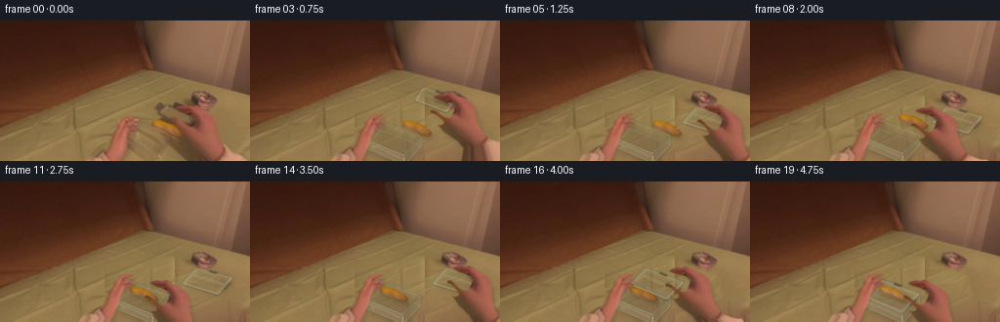
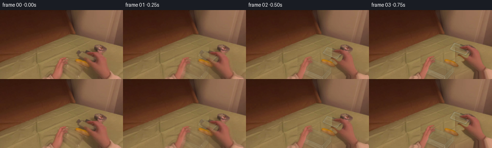
展开代码变化
--- 上一保存版本
+++ 本次保存版本
@@ -18,26 +18,29 @@
return np.asarray(im).astype(np.float32)/255
LP=[(86,145),(96,138),(105,133),(108,132),(111,125),(114,116),(119,107),(123,102),(126,100),(132,99),(136,98.5),(138,99.1),(138,100.5),(133,102.2),(130,104.8),(130,106.7),(136,103.2),(138,102.6),(140.2,103.3),(140.4,104.8),(137,107.3),(133,109.4),(136.5,107.5),(139.7,108),(140.7,109.2),(138.7,111),(134,113.3),(131.5,113.8),(132.5,115),(130,117.8),(127.9,119),(125.4,129),(121.6,137.7),(119.8,144)]
-RP=[(194,145),(194,136),(186,127),(181,121),(178,117),(175,111),(172.4,106.8),(174.2,103),(176.4,102.9),(180.2,105.4),(185.3,110),(190.2,112.9),(193.8,112.2),(198,106.2),(198.7,101),(196.1,98),(192.2,95.7),(188.2,94.4),(183,93.2),(179.6,91.8),(177.8,90.4),(180.9,88.6),(185.8,87.4),(189.8,88),(194.1,86.8),(197.2,87.6),(200.6,90),(204.8,92.1),(209.8,94.3),(214,97.4),(217.5,102.4),(219.2,109),(220.1,117.9),(223.1,128.8),(227.4,135),(229.8,138),(238,142),(250,146)]
+RP=[(203,145),(198,137),(186,127),(181,121),(178,117),(175,111),(172.4,106.8),(174.2,103),(176.4,102.9),(180.2,105.4),(185.3,110),(190.2,112.9),(193.8,112.2),(198,106.2),(198.7,101),(196.1,98),(192.2,95.7),(188.2,94.4),(183,93.2),(179.6,91.8),(177.8,90.4),(180.9,88.6),(185.8,87.4),(189.8,88),(194.1,86.8),(197.2,87.6),(200.6,90),(204.8,92.1),(209.8,94.3),(214,97.4),(217.5,102.4),(219.2,109),(220.1,117.9),(223.1,128.8),(227.4,135),(229.8,138),(238,142),(250,146)]
BP=[(156.3,105),(157.8,102.8),(161.5,102.5),(165.7,103.6),(171.5,105),(178.3,108.2),(182.7,111.8),(185.9,115.1),(186.1,117),(183.9,118.8),(181,119.1),(176.8,117.9),(168.7,114),(160.4,110.6),(157.1,108.6)]
lmask=poly_mask(LP,.45);rmask=poly_mask(RP,.45);bmask=poly_mask(BP,.35)
+rmask*=1-bmask
# The stationary table is recovered only from colors and fabric texture in the photograph.
-remove=np.maximum.reduce([lmask,rmask,bmask,poly_mask([(128,101),(146,103),(159,83),(181,82),(201,98),(202,123),(205,144),(121,144),(117,122)],1)])
+remove=np.maximum.reduce([lmask,rmask,bmask,poly_mask([(111,98),(146,96),(155,79),(178,82),(197,90),(219,99),(226,122),(256,136),(256,144),(85,144),(106,123)],1)])
remove=cv2.resize(remove,(W,H),interpolation=cv2.INTER_AREA)
mask=np.uint8(remove>.08)*255
mask=cv2.dilate(mask,np.ones((5,5),np.uint8))
-bg0=cv2.inpaint(src,mask,8,cv2.INPAINT_TELEA).astype(float)
yy,xx=np.mgrid[:H,:W]
-# Reuse neighboring cloth at matching brightness, blending into the original untouched pixels.
-mx=(xx*.75+11)%73+30
-my=yy*.28+69
-tex=cv2.remap(src.astype(np.float32),mx.astype(np.float32),my.astype(np.float32),cv2.INTER_CUBIC)
+# A fitted illumination field and reused weave remove the moving arms' old shadows.
+x=xx/W;y=yy/H
+basis=np.stack([np.ones_like(x),x,y,x*y,x*x,y*y],axis=-1)
+samples=((xx<108)&(xx>8)&(yy>113-.45*xx)) | ((xx>232)&(yy>81)&(yy<124)) | ((xx>119)&(xx<185)&(yy>71)&(yy<81))
+coeff=np.linalg.lstsq(basis[samples],src[samples].astype(float),rcond=None)[0]
+base=basis@coeff
+mx=np.where(xx>106,27+np.mod(xx-106,73),xx).astype(np.float32)
+my=(np.minimum(yy,137)).astype(np.float32)
+tex=cv2.remap(src.astype(np.float32),mx,my,cv2.INTER_CUBIC)
low=cv2.GaussianBlur(tex,(0,0),5)
-base=cv2.GaussianBlur(bg0.astype(np.float32),(0,0),8)
-fill=base+0.55*(tex-low)
-# Keep gentle directional woven folds rather than a perfectly smooth fill.
-blend=cv2.GaussianBlur(mask.astype(np.float32)/255,(0,0),1.7)
+fill=base+.65*(tex-low)
+blend=cv2.GaussianBlur(mask.astype(np.float32)/255,(0,0),2)
bg=np.clip(src*(1-blend[...,None])+fill*blend[...,None],0,255).astype(np.uint8)
bgHi=cv2.resize(bg,(W*S,H*S),interpolation=cv2.INTER_CUBIC).astype(np.float32)
@@ -47,19 +50,20 @@
arr=np.zeros((196*S,300*S,4),np.float32)
arr[:H*S,:W*S,:3]=hi
arr[:H*S,:W*S,3]=mask
- if side=='r':
+ if side in ('r','l'):
for y in range(H*S,196*S):
- for x in range(199*S,300*S):
- sx=min(251*S-1,max(233*S,int(x-(y-H*S)*.65)))
- sy=141*S
- arr[y,x,:3]=hi[sy,sx]
- arr[y,x,3]=1
- elif side=='l':
- for y in range(H*S,196*S):
- for x in range(30*S,122*S):
- sx=min(111*S,max(89*S,int(x+(y-H*S)*.5)))
- arr[y,x,:3]=hi[142*S,sx]
- arr[y,x,3]=1
+ depth=y-H*S
+ if side=='r':
+ lo=203*S-.26*depth; hi_x=249*S+.6*depth
+ sx0,sx1=203*S,248*S
+ else:
+ lo=86*S-.6*depth; hi_x=119*S-.22*depth
+ sx0,sx1=86*S,119*S
+ for x in range(max(0,int(lo)),min(300*S,int(hi_x))):
+ u=(x-lo)/(hi_x-lo)
+ sx=int(sx0+(sx1-sx0)*u)
+ arr[y,x,:3]=hi[H*S-1,sx]
+ arr[y,x,3]=min(1,max(0,(x-lo)/(S*.6)),max(0,(hi_x-x)/(S*.6)))
return arr
left=cutout(lmask,'l'); right=cutout(rmask,'r'); bread=cutout(bmask,'b')
@@ -119,8 +123,8 @@
line(d,[AA,BB,CC,DD,AA],(188,184,150,85),.7)
line(d,[A,AA],(201,199,172,92),.8)
line(d,[B,BB],(200,198,167,88),.9)
- line(d,[A,B],(201,198,170,170),1.05)
- line(d,[A,D],(214,210,179,144),1.05)
+ line(d,[A,B],(199,195,170,124),1.05)
+ line(d,[A,D],(207,204,177,109),1.05)
line(d,[A+np.array([1,1]),B+np.array([-1,1])],(94,96,71,60),.7)
layer(canvas,draw,.4)
@@ -134,7 +138,7 @@
line(d,[D+np.array([5,8]),C+np.array([-5,8])],(204,202,171,46),1.4)
line(d,[C,CC],(225,221,191,129),1.25)
line(d,[D,DD],(206,205,172,104),1.05)
- line(d,[D,C,B],(216,211,181,173),1.15)
+ line(d,[D,C,B],(207,204,176,115),1.15)
line(d,[D+np.array([1,1.8]),C+np.array([0,1.8]),B+np.array([-1,1.5])],(92,101,81,70),.75)
line(d,[DD,CC,BB],(183,186,153,98),.65)
line(d,[D+np.array([5,5]),D+np.array([12,10])],(229,220,184,58),2)
候选 03播放与检查图
点击播放 · 原生 RGB 像素
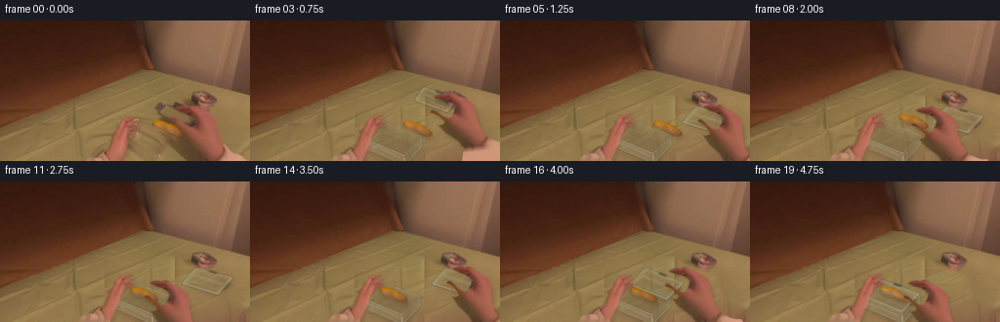
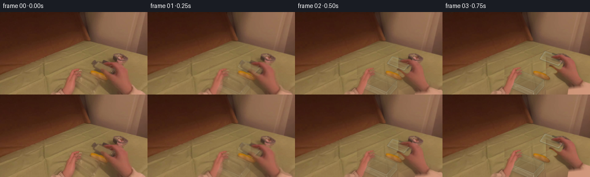
展开代码变化
--- 上一保存版本
+++ 本次保存版本
@@ -62,7 +62,11 @@
for x in range(max(0,int(lo)),min(300*S,int(hi_x))):
u=(x-lo)/(hi_x-lo)
sx=int(sx0+(sx1-sx0)*u)
- arr[y,x,:3]=hi[H*S-1,sx]
+ color=hi[H*S-1,sx].astype(float)
+ # The cream shirt continues below the cuff, not a column of wrist pixels.
+ cuff=hi[141*S, int((235+8*u)*S) if side=='r' else int((89+12*u)*S)].astype(float)
+ fabric_mix=min(1,depth/(6*S))
+ arr[y,x,:3]=color*(1-fabric_mix)+cuff*fabric_mix
arr[y,x,3]=min(1,max(0,(x-lo)/(S*.6)),max(0,(hi_x-x)/(S*.6)))
return arr
left=cutout(lmask,'l'); right=cutout(rmask,'r'); bread=cutout(bmask,'b')
@@ -210,6 +214,10 @@
if i<=2:
opacity=[0,.45,.82][i]
c=hi.astype(float)*(1-opacity)+c*opacity
+ # Very mild viewpoint sway accompanies the arm movement.
+ sway=np.sin((i-1)*.37)*.26
+ cam=affine((128,80),dx=.35*np.sin(i*.31),dy=.2*np.sin(i*.48),angle=sway)
+ c=cv2.warpAffine(c,cam,(W*S,H*S),flags=cv2.INTER_LINEAR,borderMode=cv2.BORDER_REFLECT)
f=cv2.resize(np.clip(c,0,255).astype(np.uint8),(W,H),interpolation=cv2.INTER_AREA)
frames.append(f)
frames=np.stack(frames).astype(np.uint8)
候选 04播放与检查图
点击播放 · 原生 RGB 像素
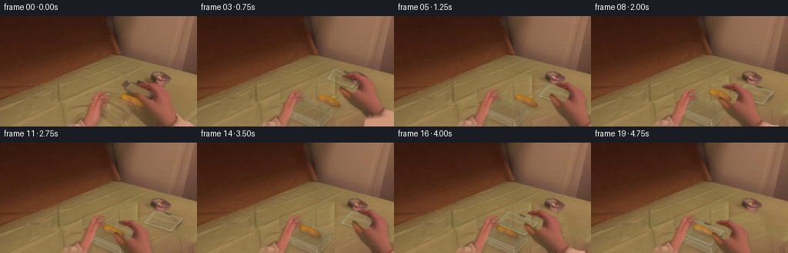
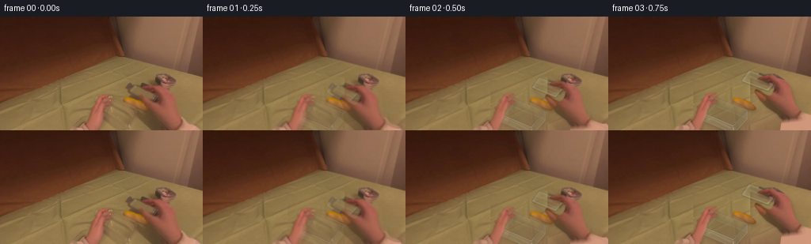
展开代码变化
--- 上一保存版本
+++ 本次保存版本
@@ -21,7 +21,7 @@
RP=[(203,145),(198,137),(186,127),(181,121),(178,117),(175,111),(172.4,106.8),(174.2,103),(176.4,102.9),(180.2,105.4),(185.3,110),(190.2,112.9),(193.8,112.2),(198,106.2),(198.7,101),(196.1,98),(192.2,95.7),(188.2,94.4),(183,93.2),(179.6,91.8),(177.8,90.4),(180.9,88.6),(185.8,87.4),(189.8,88),(194.1,86.8),(197.2,87.6),(200.6,90),(204.8,92.1),(209.8,94.3),(214,97.4),(217.5,102.4),(219.2,109),(220.1,117.9),(223.1,128.8),(227.4,135),(229.8,138),(238,142),(250,146)]
BP=[(156.3,105),(157.8,102.8),(161.5,102.5),(165.7,103.6),(171.5,105),(178.3,108.2),(182.7,111.8),(185.9,115.1),(186.1,117),(183.9,118.8),(181,119.1),(176.8,117.9),(168.7,114),(160.4,110.6),(157.1,108.6)]
lmask=poly_mask(LP,.45);rmask=poly_mask(RP,.45);bmask=poly_mask(BP,.35)
-rmask*=1-bmask
+
# The stationary table is recovered only from colors and fabric texture in the photograph.
remove=np.maximum.reduce([lmask,rmask,bmask,poly_mask([(111,98),(146,96),(155,79),(178,82),(197,90),(219,99),(226,122),(256,136),(256,144),(85,144),(106,123)],1)])
@@ -70,6 +70,11 @@
arr[y,x,3]=min(1,max(0,(x-lo)/(S*.6)),max(0,(hi_x-x)/(S*.6)))
return arr
left=cutout(lmask,'l'); right=cutout(rmask,'r'); bread=cutout(bmask,'b')
+# Reconstruct the small thumb patch that was occluded by the yellow bread.
+ry,rx=np.mgrid[:H*S,:W*S]
+th=cv2.remap(hi.astype(np.float32),np.clip(rx+6*S,0,W*S-1).astype(np.float32),np.clip(ry-5*S,0,H*S-1).astype(np.float32),cv2.INTER_CUBIC)
+thumb_alpha=bmask*rmask
+right[:H*S,:W*S,:3]=right[:H*S,:W*S,:3]*(1-thumb_alpha[:,:,None])+th*thumb_alpha[:,:,None]
def affine(center,dx=0,dy=0,angle=0,scale=1):
M=cv2.getRotationMatrix2D((center[0]*S,center[1]*S),angle,scale)
可观测工具轨迹
实际执行的命令与返回图片。
命令 1exit 0
/bin/bash -lc 'ls -la && cat prompt.txt && cat GENERATION_RULES.md'
命令 2exit 0
/bin/bash -lc "cat task_spec.json && cat artifact_io.py && python - <<'PY'
from PIL import Image
im=Image.open('first_frame.png')
im.resize((1024,576)).save('.tmp/enlarged.png')
PY"命令 3exit 0
/bin/bash -lc "python - <<'PY'
import importlib.util
for m in ['scipy','cv2']:
print(m, bool(importlib.util.find_spec(m)))
from PIL import Image,ImageDraw
im=Image.open('first_frame.png').resize((1024,576));d=ImageDraw.Draw(im)
for x in range(0,256,10):
d.line((x*4,0,x*4,575),fill=(230,230,230),width=1);d.text((x*4+2,0),str(x),fill='white')
for y in range(0,144,10):
d.line((0,y*4,1023,y*4),fill=(230,230,230),width=1);d.text((0,y*4),str(y),fill='white')
im.save('.tmp/grid.png')
PY"命令 4exit 0
/bin/bash -lc "python - <<'PY'
from PIL import Image
im=Image.open('first_frame.png')
im.crop((120,80,232,144)).resize((896,512)).save('.tmp/hands.png')
PY"命令 5exit 0
/bin/bash -lc "cat > generate.py <<'PY'
from pathlib import Path
import numpy as np
from PIL import Image, ImageDraw, ImageFilter
import cv2
from scipy.ndimage import gaussian_filter
import artifact_io
ROOT = Path(__file__).resolve().parent
W,H=256,144
S=4
src=np.array(Image.open(ROOT/'first_frame.png').convert('RGB'))
hi=cv2.resize(src,(W*S,H*S),interpolation=cv2.INTER_CUBIC)
def poly_mask(points,blur=.3):
im=Image.new('L',(W*S,H*S))
ImageDraw.Draw(im).polygon([(int(x*S),int(y*S)) for x,y in points],fill=255)
if blur: im=im.filter(ImageFilter.GaussianBlur(blur*S))
return np.asarray(im).astype(np.float32)/255
LP=[(86,145),(96,138),(105,133),(108,132),(111,125),(114,116),(119,107),(123,102),(126,100),(132,99),(136,98.5),(138,99.1),(138,100.5),(133,102.2),(130,104.8),(130,106.7),(136,103.2),(138,102.6),(140.2,103.3),(140.4,104.8),(137,107.3),(133,109.4),(136.5,107.5),(139.7,108),(140.7,109.2),(138.7,111),(134,113.3),(131.5,113.8),(132.5,115),(130,117.8),(127.9,119),(125.4,129),(121.6,137.7),(119.8,144)]
RP=[(194,145),(194,136),(186,127),(181,121),(178,117),(175,111),(172.4,106.8),(174.2,103),(176.4,102.9),(180.2,105.4),(185.3,110),(190.2,112.9),(193.8,112.2),(198,106.2),(198.7,101),(196.1,98),(192.2,95.7),(188.2,94.4),(183,93.2),(179.6,91.8),(177.8,90.4),(180.9,88.6),(185.8,87.4),(189.8,88),(194.1,86.8),(197.2,87.6),(200.6,90),(204.8,92.1),(209.8,94.3),(214,97.4),(217.5,102.4),(219.2,109),(220.1,117.9),(223.1,128.8),(227.4,135),(229.8,138),(238,142),(250,146)]
BP=[(156.3,105),(157.8,102.8),(161.5,102.5),(165.7,103.6),(171.5,105),(178.3,108.2),(182.7,111.8),(185.9,115.1),(186.1,117),(183.9,118.8),(181,119.1),(176.8,117.9),(168.7,114),(160.4,110.6),(157.1,108.6)]
lmask=poly_mask(LP,.45);rmask=poly_mask(RP,.45);bmask=poly_mask(BP,.35)
# The stationary table is recovered only from colors and fabric texture in the photograph.
remove=np.maximum.reduce([lmask,rmask,bmask,poly_mask([(128,101),(146,103),(159,83),(181,82),(201,98),(202,123),(205,144),(121,144),(117,122)],1)])
remove=cv2.resize(remove,(W,H),interpolation=cv2.INTER_AREA)
mask=np.uint8(remove>.08)*255
mask=cv2.dilate(mask,np.ones((5,5),np.uint8))
bg0=cv2.inpaint(src,mask,8,cv2.INPAINT_TELEA).astype(float)
yy,xx=np.mgrid[:H,:W]
# Reuse neighboring cloth at matching brightness, blending into the original untouched pixels.
mx=(xx*.75+11)%73+30
my=yy*.28+69
tex=cv2.remap(src.astype(np.float32),mx.astype(np.float32),my.astype(np.float32),cv2.INTER_CUBIC)
low=cv2.GaussianBlur(tex,(0,0),5)
base=cv2.GaussianBlur(bg0.astype(np.float32),(0,0),8)
fill=base+0.55*(tex-low)
# Keep gentle directional woven folds rather than a perfectly smooth fill.
blend=cv2.GaussianBlur(mask.astype(np.float32)/255,(0,0),1.7)
bg=np.clip(src*(1-blend[...,None])+fill*blend[...,None],0,255).astype(np.uint8)
bgHi=cv2.resize(bg,(W*S,H*S),interpolation=cv2.INTER_CUBIC).astype(np.float32)
# Cutouts preserve the actual hands, nail detail, skin shading, bread and sleeves.
# Extend the sleeves beyond the image so moving wrists remain attached to the body.
def cutout(mask,side):
arr=np.zeros((196*S,300*S,4),np.float32)
arr[:H*S,:W*S,:3]=hi
arr[:H*S,:W*S,3]=mask
if side=='r':
for y in range(H*S,196*S):
for x in range(199*S,300*S):
sx=min(251*S-1,max(233*S,int(x-(y-H*S)*.65)))
sy=141*S
arr[y,x,:3]=hi[sy,sx]
arr[y,x,3]=1
elif side=='l':
for y in range(H*S,196*S):
for x in range(30*S,122*S):
sx=min(111*S,max(89*S,int(x+(y-H*S)*.5)))
arr[y,x,:3]=hi[142*S,sx]
arr[y,x,3]=1
return arr
left=cutout(lmask,'l'); right=cutout(rmask,'r'); bread=cutout(bmask,'b')
def affine(center,dx=0,dy=0,angle=0,scale=1):
M=cv2.getRotationMatrix2D((center[0]*S,center[1]*S),angle,scale)
M[:,2]+=np.array([dx*S,dy*S])
return M
def paste_warp(canvas,cut,M,opacity=1,shadow=False):
# Premultiplied color prevents cutout-background fringes.
alpha=cut[:,:,3]
prem=cut[:,:,:3]*alpha[:,:,None]
a=cv2.warpAffine(alpha,M,(W*S,H*S),flags=cv2.INTER_LINEAR,borderMode=cv2.BORDER_CONSTANT)
col=cv2.warpAffine(prem,M,(W*S,H*S),flags=cv2.INTER_LINEAR,borderMode=cv2.BORDER_CONSTANT)
if shadow:
sh=cv2.warpAffine(a,np.float32([[1,0,2*S],[0,1,3*S]]),(W*S,H*S))
sh=cv2.GaussianBlur(sh,(0,0),2*S)*.14
canvas*=1-sh[:,:,None]
a*=opacity;col*=opacity
canvas[:]=canvas*(1-a[:,:,None])+col
def layer(canvas,draw_fn,blur=.25):
im=Image.new('RGBA',(W*S,H*S),(0,0,0,0)); d=ImageDraw.Draw(im)
draw_fn(d)
if blur: im=im.filter(ImageFilter.GaussianBlur(blur*S))
ar=np.asarray(im).astype(np.float32);a=ar[:,:,3:4]/255
canvas[:]=canvas*(1-a)+ar[:,:,:3]*a
def P(points):return [(round(x*S),round(y*S)) for x,y in points]
def line(d,points,fill,width=.6):d.line(P(points),fill=fill,width=max(1,round(width*S)),joint='curve')
def poly(d,points,fill):d.polygon(P(points),fill=fill)
def shadowpoly(canvas,pts,alpha=.16,blur=2,offset=(2,4)):
m=poly_mask([(x+offset[0],y+offset[1]) for x,y in pts],blur)
canvas[:]*=1-m[:,:,None]*alpha
def lerp(a,b,t):return np.asarray(a)*(1-t)+np.asarray(b)*t
def boxpoints(i):
# Small counter-motion of the supporting hand; the tub remains centered in its grasp.
t=min(i/4,1)
orig=np.array([[136,105],[178,123],[161,144],[119,125]],float)
final=np.array([[132,101],[174,117],[156,136],[115,119]],float)
q=lerp(orig,final,t)
if i>=17:q+=np.array([-.2*(i-17),-.5*(i-17)])
return q
def boxback(canvas,q):
A,B,C,D=q;drop=np.array([.7,10.5]);AA,BB,CC,DD=q+drop
shadowpoly(canvas,[A,B,CC,DD],.14,3,(4,5))
def draw(d):
# Transparent far wall, thick injection-molded corners and muted bottom.
poly(d,[A,B,BB,AA],(177,176,143,26))
poly(d,[A,D,DD,AA],(195,191,159,25))
poly(d,[AA,BB,CC,DD],(169,166,134,14))
line(d,[AA,BB,CC,DD,AA],(188,184,150,85),.7)
line(d,[A,AA],(201,199,172,92),.8)
line(d,[B,BB],(200,198,167,88),.9)
line(d,[A,B],(201,198,170,170),1.05)
line(d,[A,D],(214,210,179,144),1.05)
line(d,[A+np.array([1,1]),B+np.array([-1,1])],(94,96,71,60),.7)
layer(canvas,draw,.4)
def boxfront(canvas,q):
A,B,C,D=q;drop=np.array([.7,10.5]);AA,BB,CC,DD=q+drop
def draw(d):
poly(d,[D,C,CC,DD],(199,195,165,35))
poly(d,[B,C,CC,BB],(147,150,117,37))
# Specular glints broad enough to be real plastic rather than wireframe.
line(d,[D+np.array([3,3]),C+np.array([-3,3])],(218,213,182,58),2.2)
line(d,[D+np.array([5,8]),C+np.array([-5,8])],(204,202,171,46),1.4)
line(d,[C,CC],(225,221,191,129),1.25)
line(d,[D,DD],(206,205,172,104),1.05)
line(d,[D,C,B],(216,211,181,173),1.15)
line(d,[D+np.array([1,1.8]),C+np.array([0,1.8]),B+np.array([-1,1.5])],(92,101,81,70),.75)
line(d,[DD,CC,BB],(183,186,153,98),.65)
line(d,[D+np.array([5,5]),D+np.array([12,10])],(229,220,184,58),2)
layer(canvas,draw,.4)
# A detached clear lid with the original dark flip-locks, subtle raised perimeter and reflections.
def lid(canvas,q,closed=0):
A,B,C,D=np.array(q,float)
center=(A+B+C+D)/4
if closed<.3:shadowpoly(canvas,q,.095,2.3,(2,3))
inner=np.array(q)*.90+center*.10
def draw(d):
poly(d,q,(176,179,151,35 if not closed else 27))
poly(d,inner,(205,201,173,14))
line(d,list(q)+[A],(112,116,91,100),1.3)
line(d,list(np.array(q)+[0,-.65])+[A+[0,-.65]],(213,213,188,173),.95)
line(d,list(inner)+[inner[0]],(189,190,165,103),.55)
# Wide dim room reflection across the lid's surface.
E=A*.7+D*.3;F=B*.7+C*.3
line(d,[E+[2,2],F+[-2,2]],(216,212,184,43),3)
line(d,[D*.73+A*.27,C*.73+B*.27],(214,213,187,27),1.8)
# Clips hinge onto opposite edges of the lid.
for a,b,c,sign in [(A,B,D,-1),(B,C,A,1)]:
mid=a*.55+b*.45
v=(b-a);v=v/np.linalg.norm(v)*4.0
n=(a-c);n=n/np.linalg.norm(n)*2.1
pts=[mid-v,mid+v,mid+v+n,mid-v+n]
poly(d,pts,(68,62,46,230))
line(d,[mid-v+n*.7,mid+v+n*.7],(121,113,86,140),.75)
line(d,[mid-v,mid+v],(49,48,38,130),.55)
layer(canvas,draw,.5)
# Keyframed motions: lift lid, set it down, pick bread up, put it in the tub, replace lid.
handkeys={0:(0,0,0),1:(0,-1,1),2:(3,-5,3),3:(11,-12,6),4:(24,-9,2),5:(29,-1,-4),6:(11,7,-2),7:(-2,10,0),8:(-8,2,3),9:(-20,2,3),10:(-26,11,0),11:(-25,14,-2),12:(-10,2,3),13:(21,-4,0),14:(29,-1,-4),15:(16,-9,3),16:(-4,1,4),17:(-17,12,0),18:(-18,14,-2),19:(-16,14,0)}
lidkeys={0:np.array([[165,86],[195,99],[181,114],[158,99]],float),1:np.array([[165,84],[197,96],[182,111],[157,96]],float),2:np.array([[169,78],[201,89],[189,102],[160,90]],float),3:np.array([[178,69],[212,81],[201,94],[169,82]],float),4:np.array([[197,77],[230,89],[219,103],[185,91]],float),5:np.array([[201,89],[238,99],[223,116],[187,105]],float),14:np.array([[201,89],[238,99],[223,116],[187,105]],float),15:np.array([[188,77],[223,88],[208,104],[175,92]],float),16:np.array([[149,89],[188,104],[171,121],[133,106]],float),17:np.array([[132,98],[174,114],[156,133],[115,116]],float)}
def lidq(i,q):
if 6<=i<=13:return lidkeys[5]
if i>=18:return q+np.array([0,-.6])
return lidkeys[i]
def breadmotion(i):
if i<=7:return (0,0,0,1)
vals={8:(-4,-7,2,1),9:(-18,-7,1,1),10:(-25,1,0,.96),11:(-24,5,0,.96),12:(-24,5,0,.96),13:(-24,5,0,.96),14:(-24,5,0,.96),15:(-24,5,0,.96),16:(-24,5,0,.96),17:(-24.2,5,0,.96),18:(-24.4,4.5,0,.96),19:(-24.6,4,0,.96)}
return vals[i]
frames=[src.copy()]
for i in range(1,20):
c=bgHi.copy();q=boxpoints(i)
boxback(c,q)
if i<8:
paste_warp(c,bread,affine((171,111)),shadow=True)
elif i<10:
bm=breadmotion(i);paste_warp(c,bread,affine((171,111),*bm[:3],scale=bm[3]),shadow=True)
else:
bm=breadmotion(i)
# Bread sits inside the clear container, with soft contact shadow on its bottom.
paste_warp(c,bread,affine((171,111),*bm[:3],scale=bm[3]),shadow=True)
boxfront(c,q)
lq=lidq(i,q)
# Idle lid remains on the table behind the moving arm.
lid(c,lq,closed=1 if i>=18 else 0)
ldx=-4*min(i/4,1);ldy=-4*min(i/4,1)
if i>=17:ldx-=.2*(i-17);ldy-=.5*(i-17)
paste_warp(c,left,affine((122,130),ldx,ldy,angle=-2*min(i/4,1)),shadow=True)
dx,dy,ang=handkeys[i]
paste_warp(c,right,affine((184,102),dx,dy,ang),shadow=True)
# Blend the new geometry into the supplied first pose, without a cut.
if i<=2:
opacity=[0,.45,.82][i]
c=hi.astype(float)*(1-opacity)+c*opacity
f=cv2.resize(np.clip(c,0,255).astype(np.uint8),(W,H),interpolation=cv2.INTER_AREA)
frames.append(f)
frames=np.stack(frames).astype(np.uint8)
artifact_io.save(frames,ROOT)
Image.fromarray(bg).save(ROOT/'.tmp/background.png')
# Full-sized intermediate inspection contact sheet.
sheet=Image.new('RGB',(W*5,H*4))
for i,f in enumerate(frames):sheet.paste(Image.fromarray(f),(W*(i%5),H*(i//5)))
sheet.save(ROOT/'.tmp/all_frames.png')
PY
python generate.py"命令 6exit 0
/bin/bash -lc "python - <<'PY'
from PIL import Image
im=Image.open('frames/13.png');im.resize((1024,576)).save('.tmp/frame13.png')
PY"命令 7exit 0
/bin/bash -lc "python - <<'PY'
p='generate.py'
s=open(p).read().replace('RP=[(194,145),(194,136)','RP=[(203,145),(198,137)')
s=s.replace(\"lmask=poly_mask(LP,.45);rmask=poly_mask(RP,.45);bmask=poly_mask(BP,.35)\",\"lmask=poly_mask(LP,.45);rmask=poly_mask(RP,.45);bmask=poly_mask(BP,.35)\\nrmask*=1-bmask\")
a=s.index('remove=np.maximum.reduce')
b=s.index('bgHi=',a)
s=s[:a]+'''remove=np.maximum.reduce([lmask,rmask,bmask,poly_mask([(111,98),(146,96),(155,79),(178,82),(197,90),(219,99),(226,122),(256,136),(256,144),(85,144),(106,123)],1)])
remove=cv2.resize(remove,(W,H),interpolation=cv2.INTER_AREA)
mask=np.uint8(remove>.08)*255
mask=cv2.dilate(mask,np.ones((5,5),np.uint8))
yy,xx=np.mgrid[:H,:W]
# A fitted illumination field and reused weave remove the moving arms' old shadows.
x=xx/W;y=yy/H
basis=np.stack([np.ones_like(x),x,y,x*y,x*x,y*y],axis=-1)
samples=((xx<108)&(xx>8)&(yy>113-.45*xx)) | ((xx>232)&(yy>81)&(yy<124)) | ((xx>119)&(xx<185)&(yy>71)&(yy<81))
coeff=np.linalg.lstsq(basis[samples],src[samples].astype(float),rcond=None)[0]
base=basis@coeff
mx=np.where(xx>106,27+np.mod(xx-106,73),xx).astype(np.float32)
my=(np.minimum(yy,137)).astype(np.float32)
tex=cv2.remap(src.astype(np.float32),mx,my,cv2.INTER_CUBIC)
low=cv2.GaussianBlur(tex,(0,0),5)
fill=base+.65*(tex-low)
blend=cv2.GaussianBlur(mask.astype(np.float32)/255,(0,0),2)
bg=np.clip(src*(1-blend[...,None])+fill*blend[...,None],0,255).astype(np.uint8)
''' +s[b:]
a=s.index(\" if side=='r':\")
b=s.index(' return arr',a)
s=s[:a]+''' if side in ('r','l'):
for y in range(H*S,196*S):
depth=y-H*S
if side=='r':
lo=203*S-.26*depth; hi_x=249*S+.6*depth
sx0,sx1=203*S,248*S
else:
lo=86*S-.6*depth; hi_x=119*S-.22*depth
sx0,sx1=86*S,119*S
for x in range(max(0,int(lo)),min(300*S,int(hi_x))):
u=(x-lo)/(hi_x-lo)
sx=int(sx0+(sx1-sx0)*u)
arr[y,x,:3]=hi[H*S-1,sx]
arr[y,x,3]=min(1,max(0,(x-lo)/(S*.6)),max(0,(hi_x-x)/(S*.6)))
''' +s[b:]
# slightly less bright clear plastic
s=s.replace('(216,211,181,173)','(207,204,176,115)').replace('(201,198,170,170)','(199,195,170,124)').replace('(214,210,179,144)','(207,204,177,109)')
open(p,'w').write(s)
PY
python generate.py"命令 8exit 0
/bin/bash -lc "python - <<'PY'
p='generate.py';s=open(p).read()
s=s.replace('arr[y,x,:3]=hi[H*S-1,sx]\\n arr[y,x,3]=min', '''color=hi[H*S-1,sx].astype(float)
# The cream shirt continues below the cuff, not a column of wrist pixels.
cuff=hi[141*S, int((235+8*u)*S) if side=='r' else int((89+12*u)*S)].astype(float)
fabric_mix=min(1,depth/(6*S))
arr[y,x,:3]=color*(1-fabric_mix)+cuff*fabric_mix
arr[y,x,3]=min''')
s=s.replace(\" f=cv2.resize(np.clip(c,0,255).astype(np.uint8),(W,H),interpolation=cv2.INTER_AREA)\",\"\"\" # Very mild viewpoint sway accompanies the arm movement.
sway=np.sin((i-1)*.37)*.26
cam=affine((128,80),dx=.35*np.sin(i*.31),dy=.2*np.sin(i*.48),angle=sway)
c=cv2.warpAffine(c,cam,(W*S,H*S),flags=cv2.INTER_LINEAR,borderMode=cv2.BORDER_REFLECT)
f=cv2.resize(np.clip(c,0,255).astype(np.uint8),(W,H),interpolation=cv2.INTER_AREA)\"\"\")
open(p,'w').write(s)
PY
python generate.py
python - <<'PY'
import numpy as np
from PIL import Image
p=np.load('pixels.npz')['pixels']
f=np.array(Image.open('first_frame.png').convert('RGB'))
r=((p[:,:,0]>>16)&255).astype('uint8');g=((p[:,:,0]>>8)&255).astype('uint8');b=(p[:,:,0]&255).astype('uint8')
assert np.array_equal(np.stack([r,g,b],-1),f)
assert p.shape==(144,256,20)
print('Verified: 20 RGB frames, 256x144, first frame pixel-identical.')
Image.open('frames/18.png').resize((768,432)).save('.tmp/final_large.png')
PY"命令 9exit 0
/bin/bash -lc "python - <<'PY'
p='generate.py';s=open(p).read().replace('rmask*=1-bmask','')
s=s.replace(\"left=cutout(lmask,'l'); right=cutout(rmask,'r'); bread=cutout(bmask,'b')\", \"\"\"left=cutout(lmask,'l'); right=cutout(rmask,'r'); bread=cutout(bmask,'b')
# Reconstruct the small thumb patch that was occluded by the yellow bread.
ry,rx=np.mgrid[:H*S,:W*S]
th=cv2.remap(hi.astype(np.float32),np.clip(rx+6*S,0,W*S-1).astype(np.float32),np.clip(ry-5*S,0,H*S-1).astype(np.float32),cv2.INTER_CUBIC)
thumb_alpha=bmask*rmask
right[:H*S,:W*S,:3]=right[:H*S,:W*S,:3]*(1-thumb_alpha[:,:,None])+th*thumb_alpha[:,:,None]\"\"\")
open(p,'w').write(s)
PY
python generate.py"视觉工具实际返回图片 1
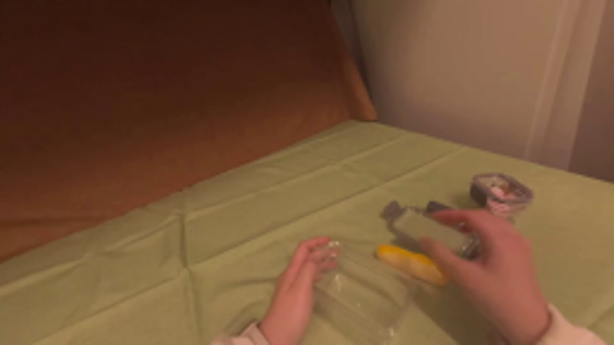
视觉工具实际返回图片 2
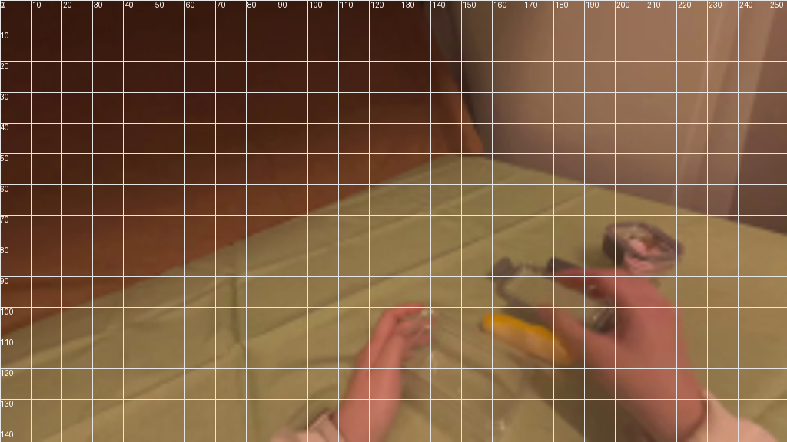
视觉工具实际返回图片 3
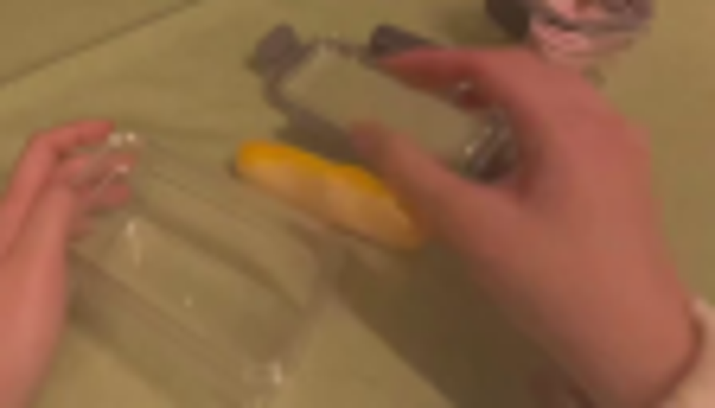
视觉工具实际返回图片 4
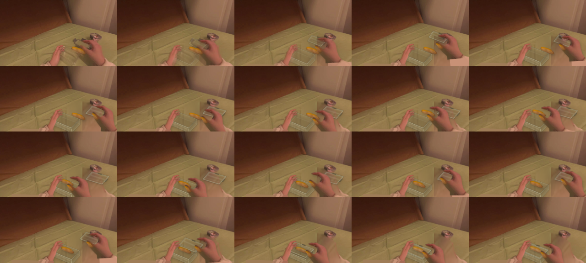
视觉工具实际返回图片 5
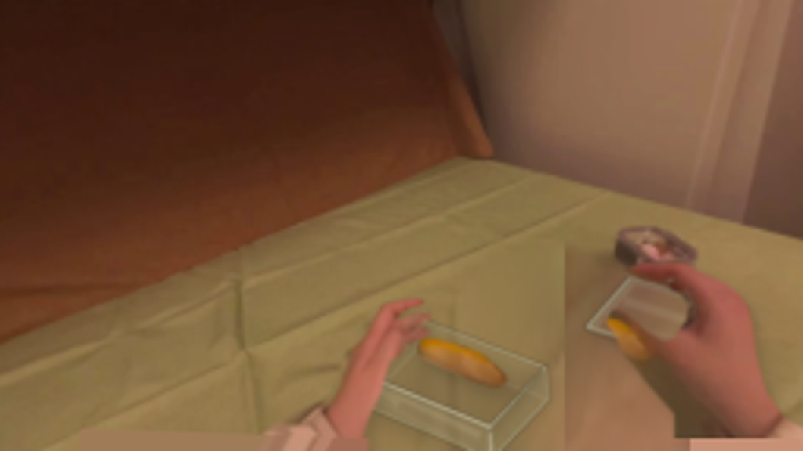
视觉工具实际返回图片 6
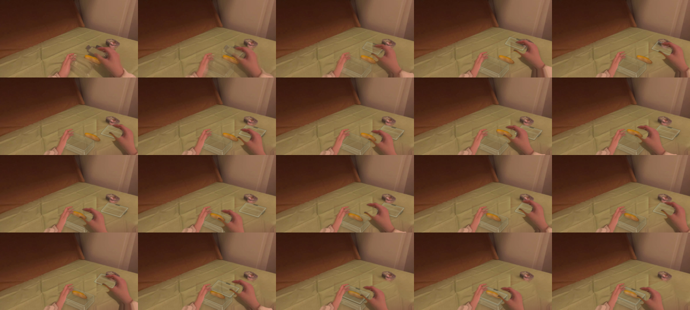
视觉工具实际返回图片 7
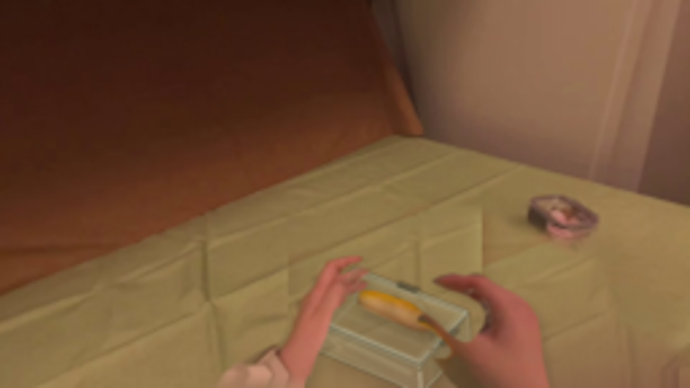
保存候选 4 份；完成命令 9 次；可验证图片返回 7 张。原始 API 响应与完整日志保留在本地。